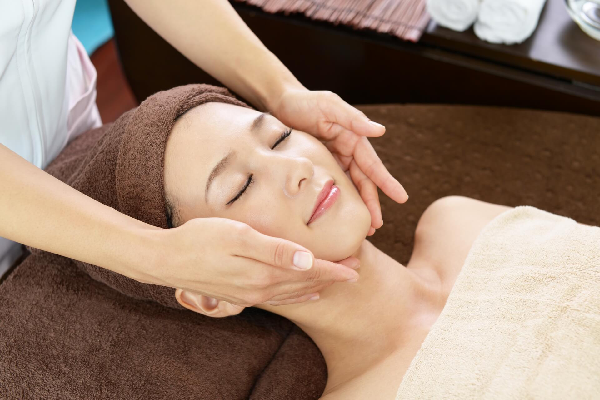
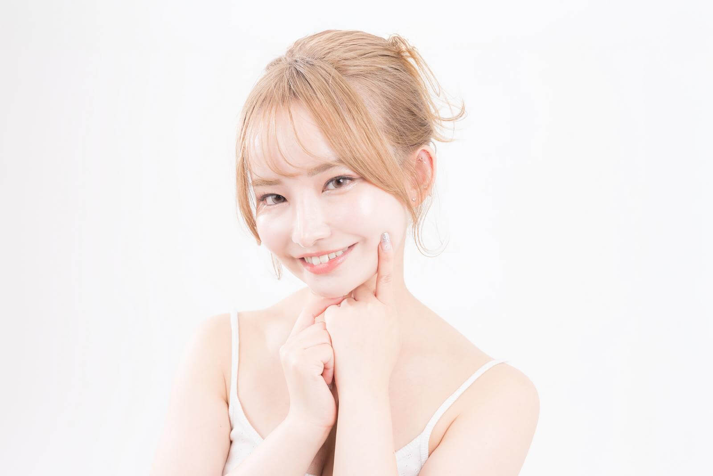

韓国式フェイシャルで
憧れのすっきりフェイスラインへ。
韓国美容発想の小顔フェイシャルで
むくみ・フェイスラインの
お悩みにアプローチ

LINE相談OK
完全予約制
老廃物の排出を促し、
顔のむくみをすっきり整えます。
筋肉にアプローチし、
シャープなフェイスラインへ導きます。
心地よい施術でリラックスしながら、
内側から美しさを引き出します。
STEP 01
お悩みや理想のフェイスラインを丁寧にヒアリングし、
一人ひとりに合った施術をご提案します。
STEP 02
顔・首・デコルテのリンパを流し、
むくみを解消しながらすっきり整えます。
STEP 03
筋肉にアプローチしながら引き締め、
シャープなフェイスラインへ導きます。
★★★★★
20代女性 ／ 会社員
フェイスラインがすっきりして、写真を撮るのが楽しみになりました！
周りからも「少し痩せたんじゃない？」と言われて嬉しかったです！

★★★★★
30代女性 ／ 主婦
顔のむくみが気にならなくなり、メイクが楽になりました。
無理な勧誘もなく安心して通えています。ママ友にもおすすめしたいです。
★★★★★
40代女性 ／ 自営業
顔のたるみが気になっていましたが、施術後はスッキリした印象に。
評判通りの施術内容で、継続して通いたいと思えるサロンです。
美容業界歴4年 / 韓国美容認定資格保持
お客様一人ひとりのお悩みに寄り添い、
無理のない自然な美しさを引き出します。
これまで多くのお客様のフェイスラインや
むくみのお悩みと向き合ってきました。
「変化を実感できた」
「自分に自信が持てた」
そんなお声をいただくたびに、
この仕事のやりがいを感じています。
＼ 一日◯名限定 ／
今なら初回限定で
小顔フェイシャル体験コースをご用意しています。
初回限定 ￥◯◯ （通常 ￥◯◯ → 初回 ￥◯◯）
まずはお気軽にご相談ください。（相談だけでも大丈夫です）
空き状況の確認だけでもお気軽にご連絡ください
LINEで無料相談する無理な勧誘は一切ありませんので、ご安心ください。
A. 個人差はありますが、強い痛みはほとんどありません。
リラックスして受けていただける施術です。
A. 1回でも変化を実感される方が多いですが、
継続することでより効果を感じていただけます。
A. 無理な勧誘は一切行っておりません。
ご納得いただいた上でご利用いただけますのでご安心ください。
A. 最初は2〜3週間に1回のペースがおすすめです。
その後は状態に合わせてご提案いたします。
まずは無料でご相談ください。
空き状況の確認だけでも大丈夫です。